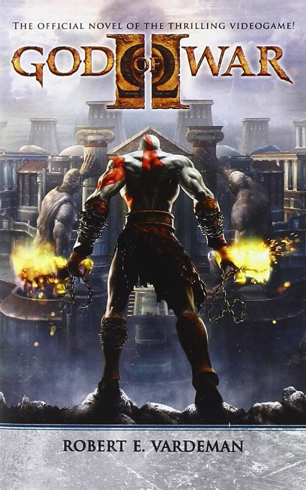
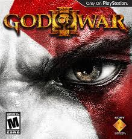

O jogo começa apresentando o protagonista em um estado de fragilidade. Depois de sofrer por 10 anos com pesadelos diários e temendo enlouquecer, Kratos se lança para a morte da montanha mais alta da Grécia.
Mas o início desse suposto fim acontece três semanas antes. Kratos é enviado pelo Deus dos Mares, Poseidon, para enfrentar uma hidra que está aterrorizando o oceano — mas não necessariamente salvar os tripulantes da embarcação que ela ataca. Os minions da fera marinha causaram um massacre no navio que traz lembranças ao espartano. Flashes de um passado que ainda o atormenta.
GOD OF WAR 2

God of War 2 começa com Kratos no panteão grego. Após derrotar Ares, ele assume sua posição como o novo deus da guerra no Olimpo.
Após uma grande batalha, Kratos recebe auxílio de Zeus, que pede, em troca, sua lealdade ao Olimpo. Ele se nega, por ainda ser atormentado com pesadelos de sua família morta.
GOD OF WAR 3

"God of War III" inicia exatamente no ponto em que "GoW II" terminou: o guerreiro espartano Kratos busca a ajuda dos exilados titãs para enfrentar os deuses gregos, que habitam o Monte Olimpo.
Mais especificamente, Kratos busca vingança contra Zeus, divindade suprema que traiu diversas vezes o herói.